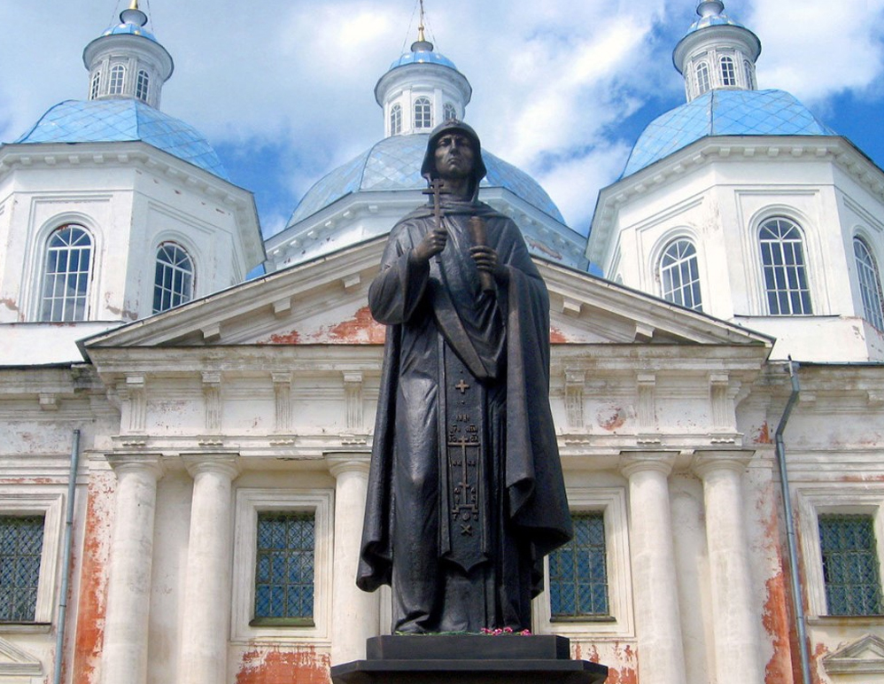
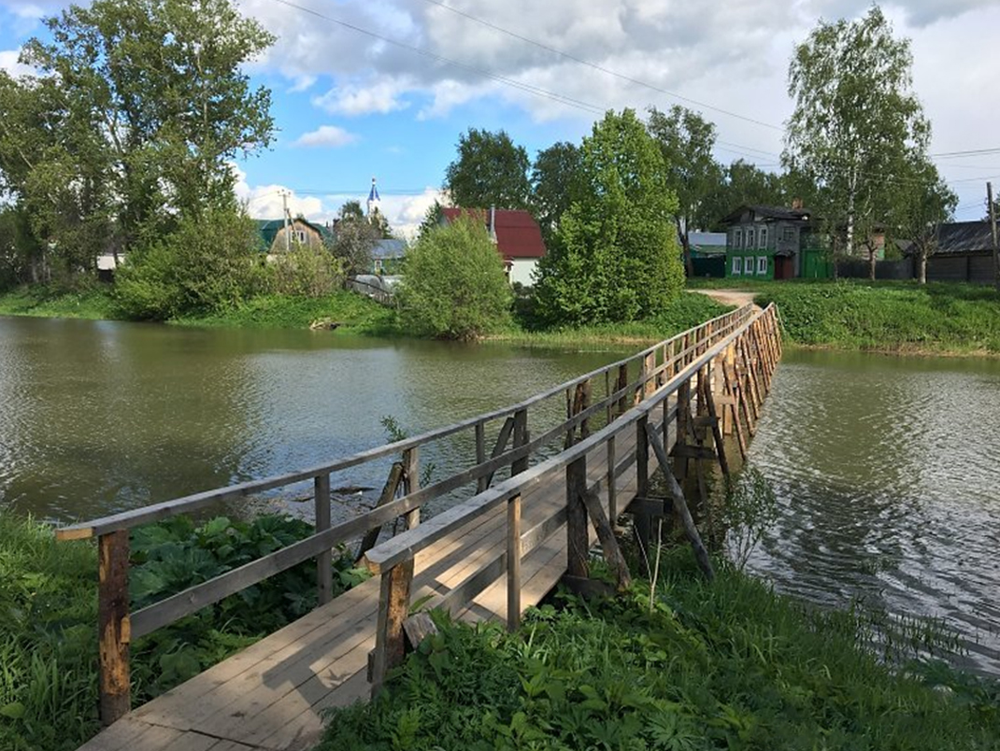

С городом тесно связано имя русской святой Анны Кашинской, которая считается покровительницей города, её мощи находятся в Вознесенском соборе, а также имя преподобного Макария, основателя Калязинского Троицкого монастыря.
В Кашине родились фотограф В. А. Колотильщиков, работы которого были отмечены серебряной медалью на Всемирной фотографической выставке в Москве и грамотой на Всемирной фотографической выставке в Париже и знаменитая русская певица Е. А. Лавровская.
